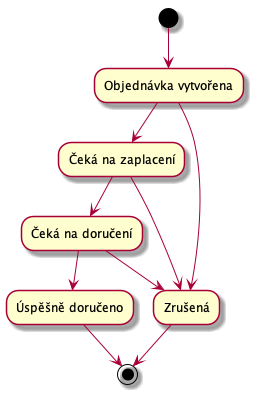
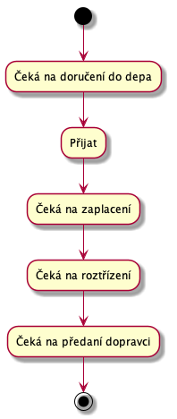

Stavy DRAFT
Objednávky a balíky během vyřizování procházejí několika stavama. V první verzi, kde budeme mít právě jeden balík na objednávky, bude možné následující stavy spojit v jeden.
Stavy objednávek
Objednávka prochází následujícími stavy:

Stavy jednotlivých balíků
Balíky během doručování procházejí následujícími stavy:
